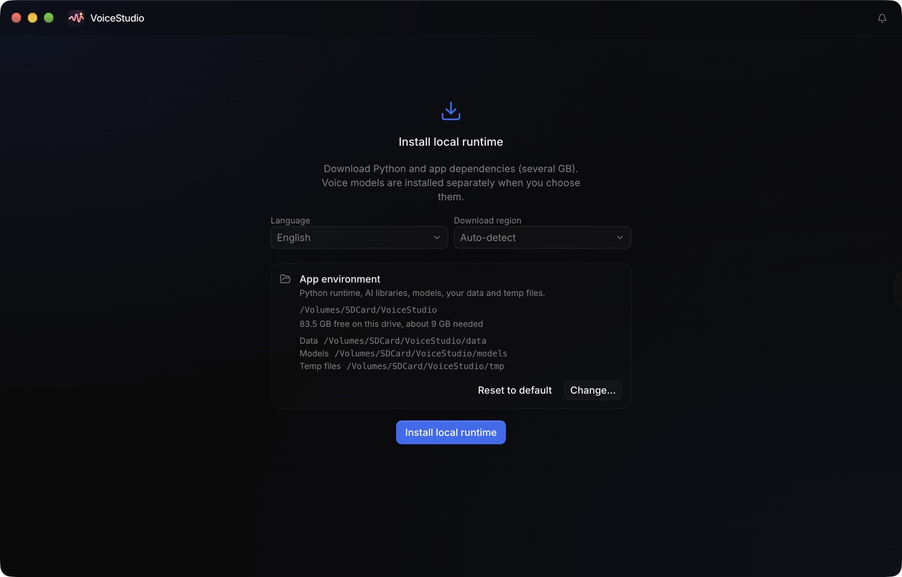
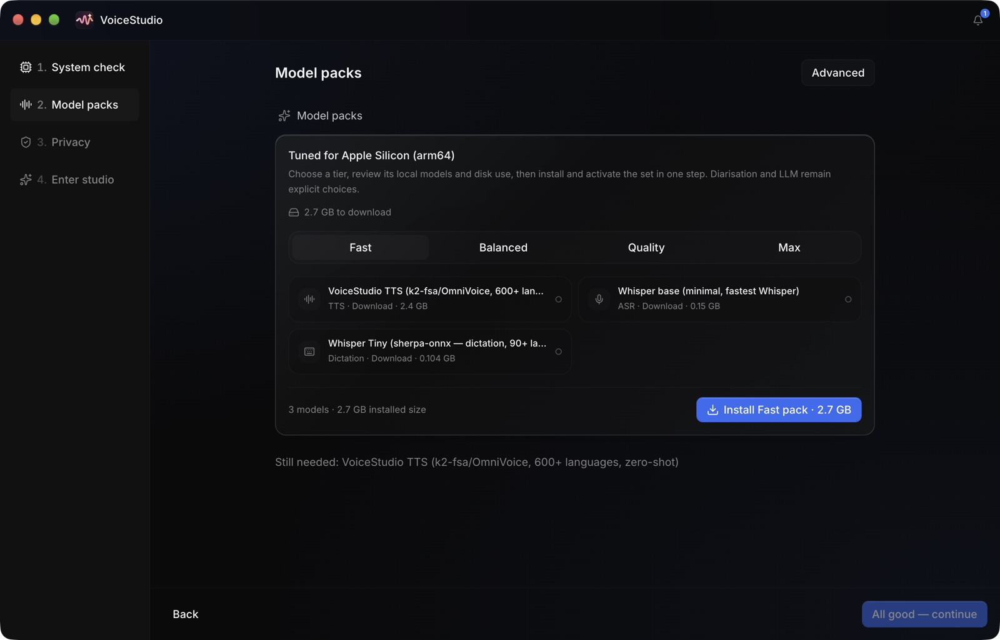
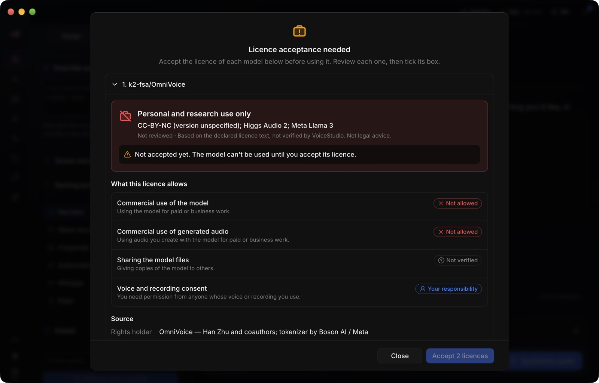
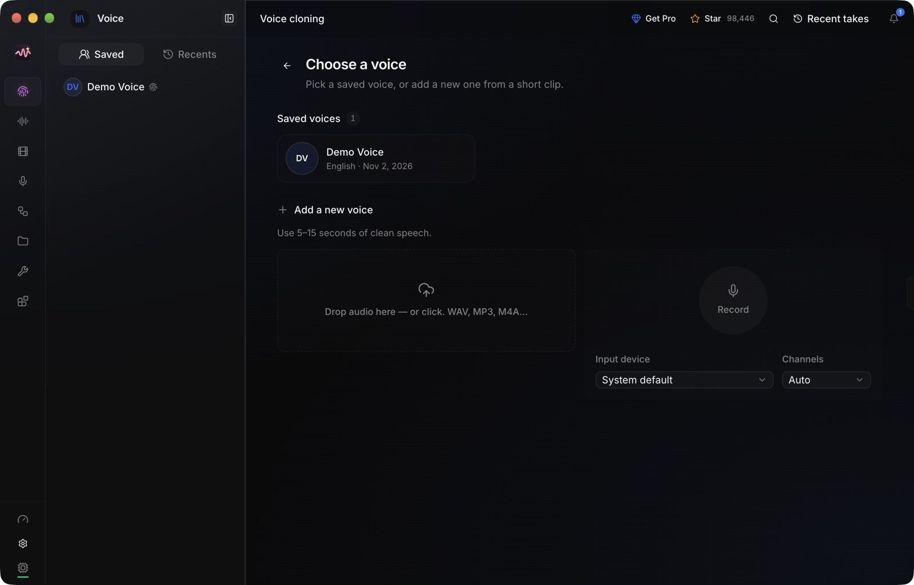
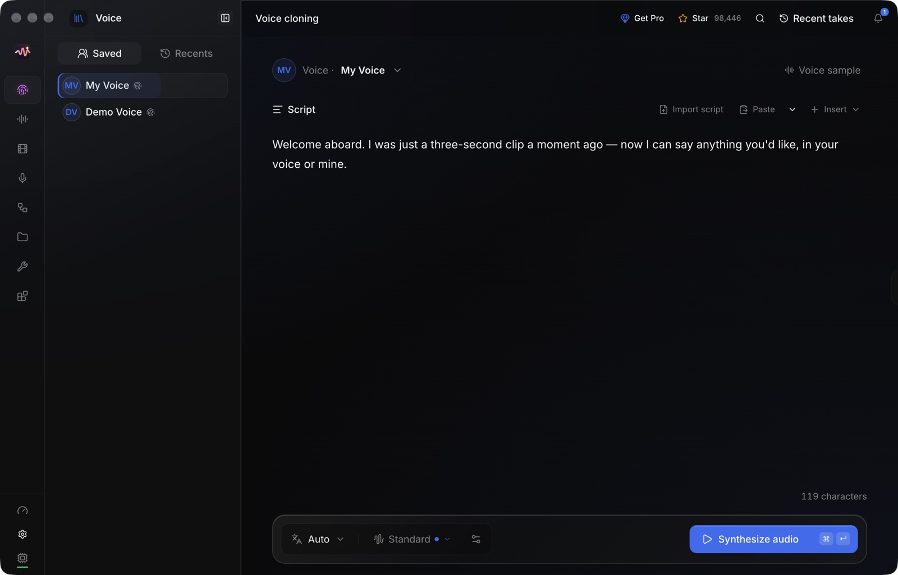
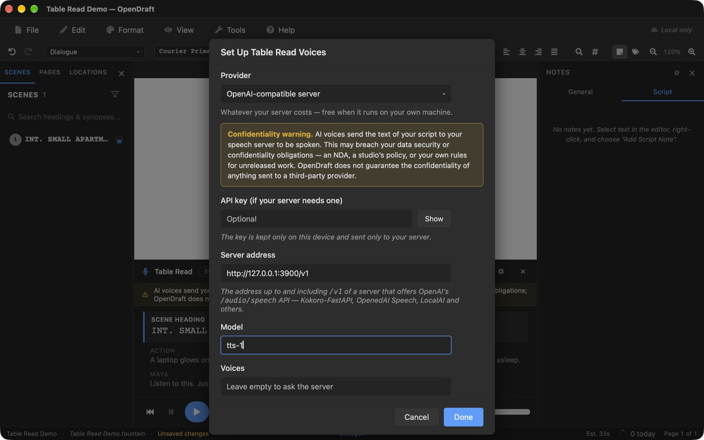
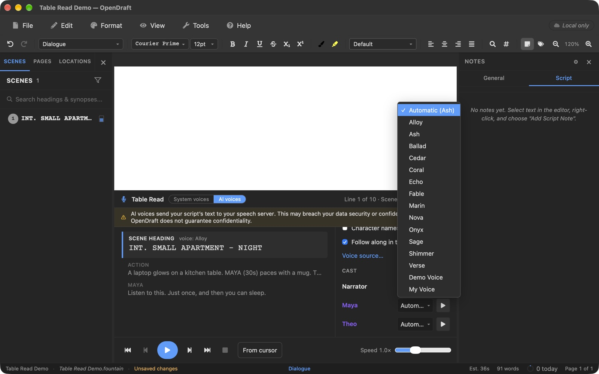

Hearing a scene is the fastest way to find the line that doesn’t land. Table Read already gives each character a voice of its own. Some writers want more than that: to hear the protagonist sound like themselves, or like the actor they have in mind, while they rewrite.
VoiceStudio makes that possible without sending a word of your script anywhere. It’s an open-source app (AGPL-3.0) that clones a voice from a short recording and runs entirely on your computer. It also speaks the same speech API that OpenDraft’s OpenAI-compatible server option talks to, so the two connect with three settings.
Before you start
- OpenDraft 2.8.3 or later, the desktop app for macOS, Windows or Linux. Earlier versions couldn’t send speech requests to VoiceStudio from the Mac app. Using OpenDraft in a browser instead? See the note for browsers.
- About 10 GB of free disk space: roughly 4 GB for VoiceStudio’s runtime and 3 GB for the voice models, plus room to spare. It doesn’t have to be your system drive.
- A reasonably recent computer. An Apple Silicon Mac or a PC with an NVIDIA graphics card generates speech quickly. Without one, VoiceStudio still works on the processor, just more slowly.
- A microphone and a quiet room for the 15-second recording. A laptop’s built-in mic is fine.
1Install VoiceStudio
Download the installer for your system from VoiceStudio’s releases page, or install it from a terminal on macOS or Linux:
curl -fsSL https://voicestudio.sh/install | shOn Windows, in PowerShell:
irm https://voicestudio.sh/install.ps1 | iexThe first time it opens, VoiceStudio offers to install its local runtime: Python and the AI libraries, several gigabytes. This is where you choose where everything lives. To keep it off a full system drive, click Change… and pick a folder on another drive. VoiceStudio then keeps its runtime, models, your voices and its temporary files all in that one folder.

Choose an empty folder
If the folder you pick already has anything in it, VoiceStudio leaves it alone and quietly installs to its default location in your home folder instead. Create a new, empty folder for it.
Click Install local runtime. It downloads about half a gigabyte and takes a few minutes. A system check follows, which confirms your memory, disk space and graphics chip.
2Download a voice model
Next, VoiceStudio asks which model pack to install. For Table Read, Fast is all you need. It includes the speech model that clones voices (OmniVoice, 2.4 GB) and a small speech-recognition model that transcribes your recording. The larger packs add better transcription for VoiceStudio’s other features, but they don’t change how Table Read sounds.

Click Install Fast pack and wait for the download. On the Privacy step that follows, you can decline the anonymous usage statistics. Then click Enter studio.
3Read and accept the model licence
Before the speech model can be used, VoiceStudio shows its licence and asks you to accept it. Read this one properly:

Personal and research use only
- The model and the audio it makes can’t be used commercially. Hearing your own draft while you write is fine. Using the generated audio in a pitch, a podcast or anything you’re paid for is not, under this licence.
- Only clone a voice you have permission to use. Your own is fine. A friend’s or an actor’s needs their consent first.
Tick the box for each model and click Accept.
4Clone your voice
In VoiceStudio, open Voice → Clone from the sidebar (the fingerprint icon). Under Add a new voice, you can drop in an existing recording or click Record. Either way, it needs 5–15 seconds of clean speech.

Click Record (allow microphone access if your computer asks) and read something in your normal speaking voice, at your normal pace. Any paragraph will do. For example:
Every script sounds different once you hear it out loud. A line that looked sharp on the page can land flat, and a quiet moment can suddenly carry the whole scene. That’s why I read my drafts aloud.
Stop the recording, give the voice a name you’ll recognise, such as My Voice, and save it.

A quieter room and a steadier read give a better clone. If the result doesn’t sound like you, record again: it only takes a few seconds.
5Connect OpenDraft to VoiceStudio
Leave VoiceStudio running and open your script in OpenDraft. Choose Tools → Table Read, then switch the panel from System voices to AI voices. The first time you do this, OpenDraft asks you to set up a provider. To change it later, click the gear icon on the panel, then Voice source….
Choose OpenAI-compatible server as the provider and fill in:
| Setting | Value |
|---|---|
| API key | Leave empty. VoiceStudio on your own computer doesn’t need one. |
| Server address | http://127.0.0.1:3900/v1 |
| Model | tts-1, which VoiceStudio maps to its active voice model |
| Voices | Leave empty. OpenDraft asks VoiceStudio for its list of voices. |

Click Done. OpenDraft shows its usual notice that AI voices send the script’s text to the speech server. Here, that server is VoiceStudio on your own machine, at 127.0.0.1, so the text never leaves your computer.
6Give a character your voice
Click the gear icon on the Table Read panel and scroll to Cast. Every character in the script is listed with a voice picker. Open the picker for the character you want and choose My Voice. Your cloned voices appear by name, below VoiceStudio’s stock voices.

Press the play button beside the picker to hear a sample. The choice is saved with the script. You can also set it on the character’s profile, under Table Read Voice.
The narrator and the other characters can keep VoiceStudio’s stock voices, or you can clone a few more voices and cast the whole scene.
7Press play
Click the play button at the bottom of the panel. Table Read works through the scene line by line: scene headings and action in the narrator’s voice, each character in theirs. The word being spoken is highlighted in the panel and in the script, which scrolls to keep up. Click any line to read from there, or change the speed with the slider.
The first line takes longest
The first time VoiceStudio speaks after it starts, it loads the voice model into memory. That can take up to a minute. After that, lines arrive in a few seconds. Table Read fetches the next line while the current one plays, so the read keeps flowing.
If something doesn’t work
“Could not reach the speech server”
VoiceStudio isn’t running, or it’s still starting up. Open it and wait until its main window appears. To check it’s ready, open http://127.0.0.1:3900/v1/audio/voices in a browser. It should list your voices.
My cloned voice isn’t in the list
OpenDraft asks VoiceStudio for its list of voices once, and keeps it until the voice settings change. If you cloned the voice after that, quit OpenDraft and open it again.
Reading pauses between lines
VoiceStudio makes one line at a time. When it’s busy, OpenDraft waits a few seconds and asks again. On a computer without a supported graphics chip, each line simply takes longer to make. Reading at a slower speed gives it more time to keep ahead.
Using OpenDraft in a browser
The desktop app talks to VoiceStudio directly, with nothing to configure. A web page is different: VoiceStudio refuses requests from websites it doesn’t know, to stop any website you visit from using it. To let a browser copy of OpenDraft through, add the page’s address to VoiceStudio’s settings file, ~/.config/omnivoice/env on macOS and Linux or %USERPROFILE%\.config\omnivoice\env on Windows:
OMNIVOICE_ALLOWED_ORIGINS=http://localhost:5173Replace the address with the one you open OpenDraft at, then restart VoiceStudio. Some browsers also ask for your permission before a website can reach apps running on your computer.
Why it stays private
Most AI voice services work by sending your text to a company’s servers. That can be a problem for an unproduced script under an NDA. With VoiceStudio, the cloning, the voice model and every line of speech stay on your own computer. OpenDraft sends each line to 127.0.0.1, which is your machine, and plays back the audio it gets.
For a confidential script, that makes VoiceStudio one of three Table Read options that never send your text anywhere, alongside your device’s installed voices and the built-in Kokoro voices. It’s the only one of the three that can sound like you.
More about Table Read’s options is in the user manual. If you get stuck or have an idea, tell us in the community discussions.